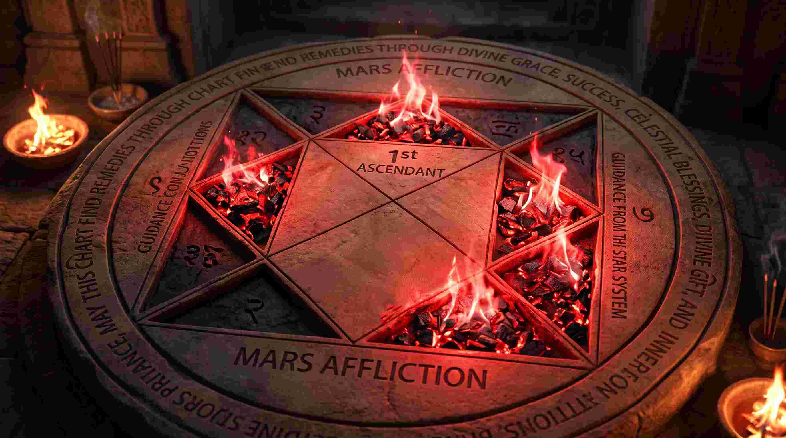

जब भी शादी की बात आती है, तो भारतीय परिवारों में सबसे पहला और सबसे डरावना सवाल यही होता है— "क्या लड़का या लड़की मांगलिक (Manglik) है?" टीवी के पंडितों और आधी-अधूरी जानकारी वाले ज्योतिषियों ने 'मंगल दोष' को एक ऐसा हौव्वा (Monster) बना दिया है, जिसे सुनकर लोग कांपने लगते हैं। कहा जाता है कि अगर एक मांगलिक की शादी गैर-मांगलिक से हो गई, तो जीवनसाथी की मृत्यु हो जाएगी!
लेकिन क्या यह सच है? एक वैदिक ज्योतिषी होने के नाते, मैंने मंगल दोष का गहराई से अध्ययन किया है। आज मैं आपको मंगल दोष (Mangal Dosha) का वह शास्त्रीय सच बताऊंगा, जो अक्सर डर के कारण लोगों से छुपा रह जाता है।
"मंगल (Mars) आपकी जन्म कुंडली में बैठा कोई राक्षस नहीं है; यह आपके रक्त (Blood) में दौड़ता हुआ हीमोग्लोबिन है। मंगल दोष का अर्थ है 'हाइपर-एनर्जी' (Hyper-Energy), न कि मृत्यु।"
2. मांगलिक की शादी गैर-मांगलिक से क्यों टूट जाती है? (The Real Reason)
लोग कहते हैं कि मांगलिक की शादी गैर-मांगलिक से करने पर जीवनसाथी मर जाता है। यह डर फैलाने वाला मिथक है! तो फिर शादी टूटती क्यों है? इसे 'एनर्जी मिसमैच' (Energy Mismatch) के सिद्धांत से समझें:
कल्पना करें कि एक मांगलिक व्यक्ति (जिसके अंदर 1000 वॉट की ऊर्जा है) की शादी एक गैर-मांगलिक व्यक्ति (जिसके अंदर 100 वॉट की ऊर्जा है) से हो जाती है। मांगलिक व्यक्ति को हर काम तुरंत चाहिए, उसे रोमांच चाहिए, वह बहस में आक्रामक हो जाता है। दूसरी तरफ, गैर-मांगलिक व्यक्ति शांत रहना चाहता है, वह इस आक्रामकता (Aggression) को झेल नहीं पाता। धीरे-धीरे दोनों के बीच तनाव और दूरी बढ़ने लगती है। समस्या मंगल नहीं, स्वभाव का बेमेल है — और इसे समझदारी व उपाय से संभाला जा सकता है।
यही कारण है कि ऋषियों ने नियम बनाया कि एक मांगलिक की शादी दूसरे मांगलिक से ही होनी चाहिए। जब 1000 वॉट की ऊर्जा 1000 वॉट से टकराती है, तो दोनों एक-दूसरे के गुस्से और जुनून को संतुलित (Cancel out) कर देते हैं।
3. कुंडली के 5 भावों में मंगल दोष का प्रभाव
मंगल दोष केवल एक प्रकार का नहीं होता। यह इस बात पर निर्भर करता है कि मंगल किस भाव (House) में बैठा है:

- प्रथम भाव (लग्न) में मंगल: व्यक्ति स्वभाव से बेहद जिद्दी, आक्रामक और डॉमिनेटिंग (Dominating) होता है। वह रिश्ते में हमेशा अपनी चलाना चाहता है, जिससे जीवनसाथी का दम घुटने लगता है।
- चतुर्थ भाव (सुख भाव) में मंगल: यह भाव घर की शांति का है। यहाँ मंगल आग लगाता है। ऐसे व्यक्ति के घर में हमेशा लड़ाई-झगड़े, चीखना-चिल्लाना और प्रॉपर्टी को लेकर विवाद (Property disputes) होते रहते हैं।
- सप्तम भाव (विवाह भाव) में मंगल: यह सबसे खतरनाक स्थिति मानी जाती है। यह सीधे तौर पर जीवनसाथी पर 'फिजिकल या इमोशनल वायलेंस' (Domestic violence / intense arguments) का कारण बनता है। व्यक्ति का गुस्सा सीधे पार्टनर पर निकलता है।
- अष्टम भाव (आयु और रहस्य) में मंगल: यह मंगल 'छिपी हुई आग' है। ऐसे लोगों में अचानक दुर्घटनाएं (Sudden accidents), खून की कमी, या गुप्तांगों (Reproductive organs) से जुड़ी गंभीर समस्याएं (जैसे Piles, Fistula, Menstrual issues) देखी जाती हैं।
- द्वादश भाव (शयन और व्यय) में मंगल: यह 'बेड प्लेजर' (Bed pleasures) और खर्चों का भाव है। यहाँ मंगल अत्यधिक कामुकता (High libido), नींद न आना (Insomnia), और अचानक बड़े वित्तीय नुकसान (Financial losses) देता है।
4. मंगल दोष कब 'कैंसिल' (रद्द) हो जाता है? (Cancellations)
लगभग 50% से अधिक लोगों की कुंडली में मंगल दोष अपने आप रद्द (Cancel) हो जाता है, लेकिन डराने वाले ज्योतिषी यह बात कभी नहीं बताते। मंगल दोष इन स्थितियों में रद्द हो जाता है:
- 28 वर्ष की आयु के बाद: ज्योतिष के अनुसार 28 वर्ष की आयु के बाद मंगल परिपक्व (Mature) हो जाता है और मंगल दोष का प्रभाव काफी कम माना जाता है। इस उम्र तक व्यक्ति के स्वभाव में भी स्वाभाविक रूप से धैर्य आ जाता है।
- यदि मंगल अपनी ही राशि (मेष या वृश्चिक) या उच्च राशि (मकर) में हो, तो मंगल दोष नहीं लगता। ऐसा व्यक्ति अपनी अपार ऊर्जा का उपयोग करियर (जैसे आर्मी, सर्जन, स्पोर्ट्स) में करता है, न कि जीवनसाथी से लड़ने में।
- यदि कुंडली में 'गुरु' (Jupiter) की दृष्टि मंगल पर पड़ जाए, तो गुरु का ज्ञान मंगल के गुस्से को बुझा देता है।
5. मंगल दोष और ऋण-मुक्ति के लिए: सम्पूर्ण अंगारक स्तोत्र
जब मंगल खराब होता है, तो व्यक्ति का ब्लड फ्लो (Blood Flow) और कॉन्फिडेंस दोनों गिर जाते हैं, और वह भयंकर कर्ज (Debt) में डूब जाता है। स्कंद पुराण से लिया गया यह अंगारक स्तोत्र मंगल ग्रह की ऊर्जा को शांत करता है। जो व्यक्ति मंगलवार को इसका पाठ करता है, उसका रुका हुआ धन वापस आता है, कर्जा खत्म होता है, और विवाह की बाधाएं दूर होती हैं।
अङ्गारकः शक्तिधरो लोहिताङ्गो दरासुतः।
कुमारो मङ्गलो भौमो महाकायो धनप्रदः॥ १ ॥
अर्थ: मंगल देव शक्ति धारण करने वाले, लाल वर्ण वाले (लोहितांग) और धरती के पुत्र (भौम) हैं। वे कुमार, मंगलकारी और विशाल शरीर वाले होकर धन देने वाले हैं।
ऋणहर्ता दृष्टिकर्ता रोगकृत् रोगनाशनः।
विद्युत्प्रभो व्रणकरः कामदो धनहृत् कुजः॥ २ ॥
अर्थ: वे ऋण (कर्ज) का नाश करने वाले, रोग उत्पन्न करने वाले और रोगों का नाश करने वाले भी हैं। वे बिजली के समान तेजस्वी हैं और इच्छाओं (काम) को पूर्ण करने वाले हैं।
सामगानप्रियः रक्तवस्त्रो रक्तायतलोचनः।
लोहितो रक्तवर्मा च सर्वकर्मविबोधकः॥ ३ ॥
अर्थ: वे सामगान के प्रिय हैं, लाल वस्त्र और लाल कवच धारण करते हैं। उनकी आँखें लाल और विशाल हैं, और वे सभी कर्मों को पूर्ण रूप से समझने वाले हैं।
रक्तमाल्यधरः हेमकुण्डली गृहनायकः।
नामान्येतानि भौमस्य यः पठेत् सततं नरः॥ ४ ॥
अर्थ: वे लाल फूलों की माला और सोने के कुंडल धारण करते हैं। जो मनुष्य इन नामों का निरंतर पाठ करता है—
ऋणं तस्य च दारिद्र्यं दैन्यं चैव विनश्यति।
धनं प्राप्नोति विपुलं स्त्रियम् चैव मनोरमाम्॥ ५ ॥
अर्थ: उसका ऋण (कर्ज), दरिद्रता और दुःख सब नष्ट हो जाते हैं। उसे बहुत धन की प्राप्ति होती है और सुंदर व स्नेहिल जीवनसाथी का सौभाग्य मिलता है।
वंशोद्धायकं पुत्रं लभते नात्र संशयः।
यः पूजयेत् भौमं दिनं मङ्गलवासनम्॥ ६ ॥
अर्थ: जो व्यक्ति मंगलवार के दिन भौम (मंगल) की पूजा करता है, वह निश्चित रूप से वंश बढ़ाने वाली उत्तम संतान प्राप्त करता है।
बहुपुष्पैः सुमङ्गल्यं सर्वं नश्यति पीडनम्।
तस्य ग्रहनिर्मितं पीडां ध्रुवं हन्ति कुजो ग्रहः॥ ७ ॥
अर्थ: जो व्यक्ति बहुत से पुष्पों से मंगल देव की पूजा करता है, उसे पूर्ण सौभाग्य की प्राप्ति होती है, और जन्मपत्री से उत्पन्न सभी पीड़ाएं कुज (मंगल ग्रह) दूर कर देते हैं।
पाठ विधि: मंगलवार की सुबह स्नान के बाद लाल आसन पर बैठकर, लाल चंदन की माला से इस स्तोत्र का पाठ करें। इसके बाद गुड़ या मसूर की दाल दान करें।
6. मंगल दोष के व्यावहारिक उपाय (Lifestyle Remedies)
यदि स्वभाव में बहुत ज़्यादा क्रोध या जल्दबाज़ी है, तो उसे सही दिशा (Channelize) देना ज़रूरी है:
- रक्तदान (Blood Donation): ज्योतिष में मंगल को रक्त का कारक माना गया है, इसलिए रक्तदान को मंगल का उत्तम उपाय माना जाता है — और यह किसी की जान बचाने वाला पुण्य कार्य भी है। रक्तदान डॉक्टर की जाँच और ब्लड बैंक के नियमों के अनुसार ही करें।
- शारीरिक व्यायाम: दौड़ना, खेल, योग या मार्शल आर्ट्स जैसी गतिविधियाँ मंगल की ऊर्जा को सही दिशा देती हैं। जब अतिरिक्त ऊर्जा मेहनत में लगती है, तो क्रोध और आवेग भी कम होता है।
निष्कर्ष: मंगल दोष से डरें नहीं, इसे दिशा दें!
मंगल दोष कोई अभिशाप नहीं है; यह एक 'सुपरपावर' (Superpower) है, अगर उसे सही दिशा मिले। ज्योतिष में मंगल साहस, नेतृत्व और परिश्रम का ग्रह है।
यदि आप मांगलिक हैं, तो बस एक ऐसे जीवनसाथी का चुनाव करें जो आपकी इस ऊर्जा को समझ सके या खुद भी उसी ऊर्जा स्तर (Energy level) का हो। अपनी कुंडली का सही और तार्किक विश्लेषण करवाएं और नियमित रूप से अंगारक स्तोत्र का पाठ करें। मंगल आपको बर्बाद करने के लिए नहीं, बल्कि दुनिया जीतने की ऊर्जा देने के लिए आपकी कुंडली में बैठा है!